Engagement across routines and rewards
FinFit Club presents a membership experience combining routine-based scoring, financial-wellness messaging, content and reward offers across mobile and web surfaces.
PRODUCT DESIGN CASE STUDY / FINANCIAL WELLNESS & REWARDS
Designing a member experience that connects everyday routines, personal progress and meaningful rewards.
FinFit Club brings together a habit-and-wellness scorecard, a rewards experience and content-led engagement. The supplied product screens show a mobile member journey built around the Invincible Scorecard (TIS), a privacy-oriented Incognito mode, score history, Pulse content and reward discovery—alongside a wider web dashboard for financial-wellness engagement.
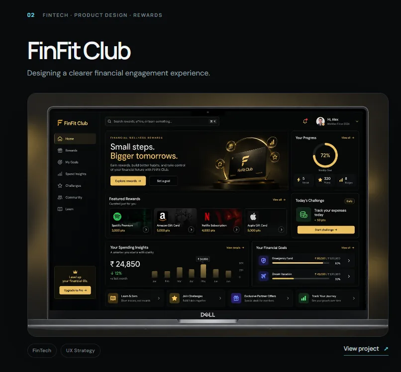
Project context: The uploaded archive contains screen exports, not a project brief or research report. The case study describes the visible product experience and a defensible UX interpretation. Confirm your exact role, dates, team, delivery status and ownership before publishing them as historical facts.
The core design challenge was to connect habit logging, personal progress and rewards into a member experience that felt motivating, understandable and respectful of privacy.
FinFit Club presents a membership experience combining routine-based scoring, financial-wellness messaging, content and reward offers across mobile and web surfaces.
Structure how members enter the product, log five chosen aspects, review progress, choose a privacy mode, discover content and access rewards.
Shape the dashboard, Invincible Scorecard, Default and Incognito modes, History, Pulse, Rewards, promotional content and the wider web dashboard experience.
The supplied archive documents the mobile entry, member dashboard, scorecard logging, history, content, rewards and a web dashboard/marketing experience.
The product's visible promise connects personal routines and progress with rewards. The UX challenge is to make the path from participation to recognition feel simple, repeatable and trustworthy.
Members need to know what to log, how the scorecard works, when to return and where to review their progress.
The scorecard, history, content and reward catalogue must work as one member proposition rather than disconnected feature destinations.
The product presents Default and Incognito modes. The choice and its consequences need to be understandable before a member logs personal information.
The archive shows a mobile app flow, a broader web dashboard and a marketing website. Their roles should be clear while keeping brand and product language consistent.
The archive shows many capabilities. MoSCoW helps explain how a product team could protect the essential participation loop while sequencing supporting content, rewards and wider engagement features.
Without these, a member cannot join, participate, understand progress or access the core value exchange.
These features improve confidence, flexibility and repeat engagement around the core loop.
Useful extensions once core logging, history and rewards are understood and working reliably.
Proposed non-goals for scope discipline, not recorded as an approved product-owner decision.
MoSCoW status: This is a retrospective prioritization framework based on the supplied feature set. It is not claimed to be the original approved backlog or a documented workshop output.
For a rewards-led wellness product, research needs to understand what motivates repeat participation, how members interpret scoring, what makes rewards valuable and what privacy means to them. The ZIP contains screens only, not primary research evidence.
Clarify what members contribute (routine logging, reflection, content engagement) and what they receive (progress feedback, club points, offers or cashback).
Research frameworkExplore what makes a five-aspect weekly logging routine understandable, achievable and worth returning to.
Research questionsInvestigate the meaning of Incognito, the perceived value of rewards, and any friction between promotional content and member tasks.
Research questions| Observed screen evidence | UX interpretation | Design opportunity | Evidence status |
|---|---|---|---|
| Home screen foregrounds a member score and cashback earned. | Members are shown both a progress signal and a tangible reward signal at entry. | Explain what each metric means, how it is earned and what action affects it. | Visible in UI |
| TIS asks members to choose five aspects from a set of routines/topics. | The scorecard uses a bounded reflection task rather than an open-ended diary. | Explain selection rules, frequency, scoring scale and what happens after logging. | Visible in UI |
| Default and Incognito modes are offered. | Privacy choice is an explicit part of the logging experience. | Describe data visibility, storage and history behavior before confirmation. | Visible in UI |
| History shows dated logs, percentages and aspect scores. | Members can review past participation and outcomes. | Make score meaning, trend direction and date comparisons clear. | Visible in UI |
| Rewards lists cashback, deals, vouchers and statuses. | Reward value and redemption availability need to be scannable. | Distinguish available, collected, upcoming and redeemed states. | Visible in UI |
| Pulse includes FinFit Shots and Express & Earn content. | Content appears to be a separate engagement path within the product. | Clarify the relationship between consuming content, earning and member benefits. | Visible in UI |
The product screens suggest three useful task-based archetypes. These are proto-archetypes inferred from visible capabilities, not validated demographic personas.
Job: log personal routines and see progress.
“Make it simple for me to record how I am doing and understand my progress over time.”
Job: participate while controlling personal disclosure.
“I want to use the scorecard, but I need to understand what is private and what is recorded.”
Job: understand and use member benefits.
“Show me what I can get, what it costs in points and whether I can redeem it now.”
Validate these archetypes with real member segments and distinguish between paying members, trial users and reward-focused visitors if those segments exist in the product.
The journey connects the visible app flow into a repeatable member loop. The steps are reconstructed from the screen sequence; emotional highs/lows and friction points remain hypotheses until validated with members.
The journey is a proposed end-to-end model. Validate whether the scorecard is weekly, how points are calculated, what triggers rewards and whether Incognito entries appear in History before describing those mechanics as confirmed behavior.
The mobile app is organized around the member's immediate dashboard and four key destinations, while the web dashboard exposes a broader financial-wellness navigation model.
IA scope: Both diagrams are reconstructed from the mobile and web screen exports. They show visible navigation and content groups, not a verified route map or complete product taxonomy.
The core flows make the decisions explicit: how a member logs, what privacy mode means, how progress is reviewed and how an offer is understood before redemption.
Review score and shortcuts.
Enter the scorecard.
Select participation mode.
Choose from available categories.
Provide ratings and log.
Review saved progress.
Decisions to validate: Can a member edit choices? What happens if fewer than five are selected? Can a log be changed? How is the overall score calculated?
Open the scorecard.
Review anonymity message.
Choose private aspects.
Submit the scorecard.
Show what is or is not stored.
Critical requirement: clearly define what “absolute anonymity” means technically—identity linkage, storage, analytics, retention and history visibility. The screen alone cannot prove the privacy implementation.
See cashback / reward cue.
Browse deals and vouchers.
Review value and terms.
Use available voucher.
Collected / upcoming state.
Decisions to validate: What makes a voucher eligible? Are points or cashback deducted? What confirmation and expiry information must be shown?
Open Pulse.
Scan available content.
Open a featured item.
Review content / offer.
Clarify whether content completion earns points, unlocks offers or simply supports engagement; the supplied screens do not show the complete earning rule.
The product needs to make progress, privacy and reward value understandable. The most important design decisions should connect those needs to visible interaction patterns and the risks they introduce.
| Decision | Member need | Design response visible in screens | Trade-off / validation need |
|---|---|---|---|
| Lead with score and cashback | Understand progress and immediate member value. | Dashboard foregrounds Invincible Score and cashback earned. | Define score calculation and cashback eligibility; prevent the two metrics being confused. |
| Bound the TIS task to five aspects | Make routine logging finite and guided. | Default mode prompts members to choose five aspects from a category set. | Explain why five, whether categories are editable and what happens if members skip a log. |
| Offer Default and Incognito modes | Give members a visible choice about logging privacy. | Separate mode selection with distinct labels and an anonymity message. | Privacy claims must match data architecture; clarify effects on history, scoring and personalization. |
| Separate History from the logging action | Review prior participation without starting a new log. | Dedicated History destination with dated entries and aspect scores. | Explain percentages, score meaning and whether entries can be edited. |
| Separate Pulse from Rewards | Distinguish content discovery from benefit redemption. | Dedicated Pulse and Rewards destinations. | Clarify earning rules so content, ads and reward offers do not blur together. |
| Show reward states | Know which benefits are available or already used. | Voucher list uses statuses such as Redeem now, Collected and Upcoming. | Need clear offer conditions, expiry, confirmation and redemption failure states. |
| Use gold as a recognition cue | Give membership, progress and benefits a premium identity. | Black surfaces with gold accents, score rings and reward panels. | Maintain contrast and avoid using gold alone for status or critical information. |
The screens are presented in task order so an interviewer can understand the product flow, not just browse a visual gallery.
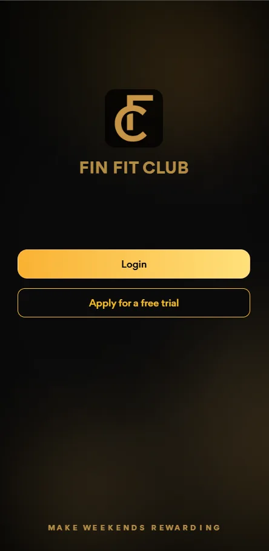
The entry screen establishes FinFit Club branding and gives two distinct paths: login and apply for a free trial. The next UX question is whether trial eligibility, duration and account expectations are clear before a member commits.
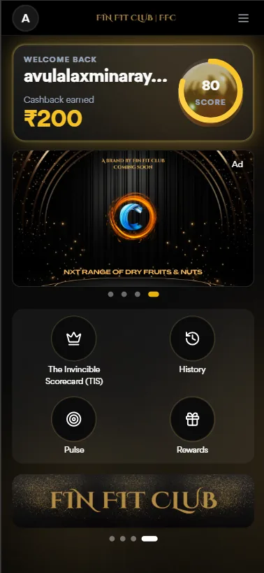
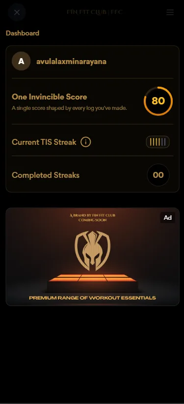
The dashboard makes the score and cashback immediately visible, then provides access to TIS, History, Pulse and Rewards. The detail screen adds a single-score explanation and streak indicators. Score and streak definitions should be available at the point of use.
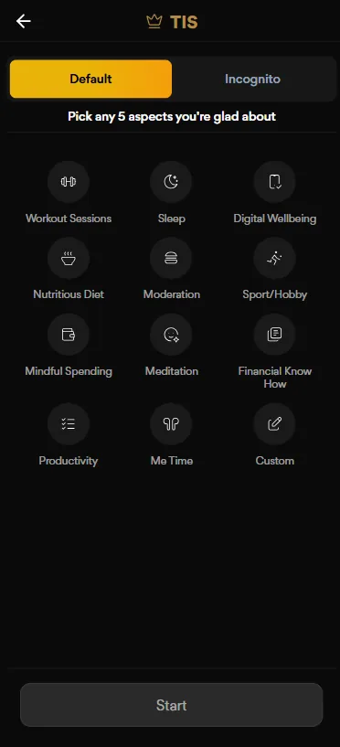
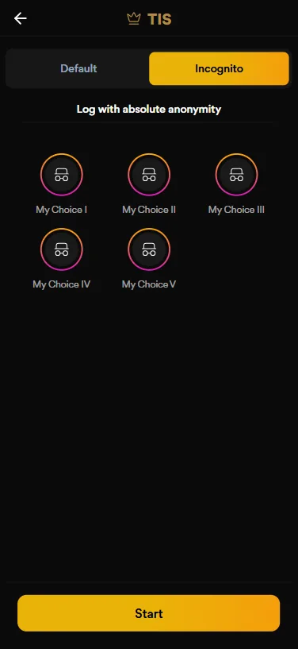
The scorecard makes the logging task explicit and bounded. The Incognito screen presents an alternate mode with an anonymity promise. The product must explain exactly what changes between modes before members log.
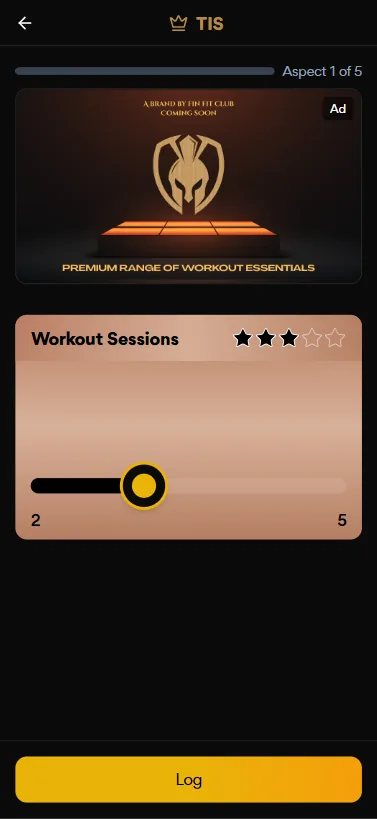
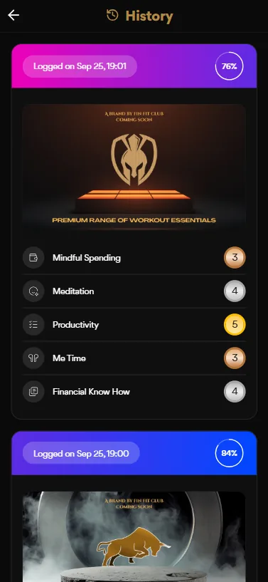
The rating screen indicates progress through five aspects and uses a star scale. History returns members to previous logs and individual aspect scores. The rating scale's meaning and the percentage calculation need clear product definitions.
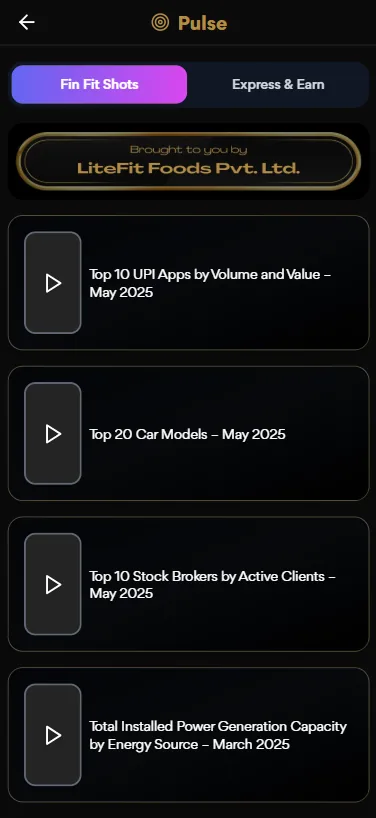
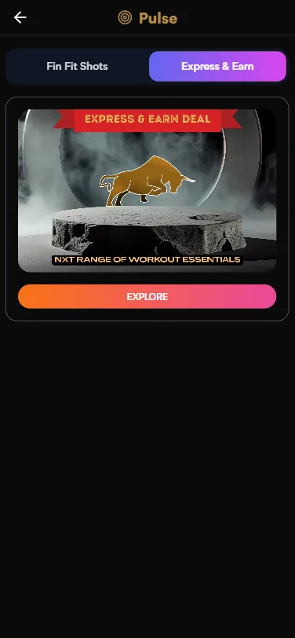
Pulse creates a content-led engagement path separate from scorecard logging. Clear content labels and an explanation of any earn mechanic are important to member trust.
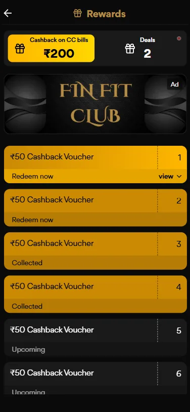
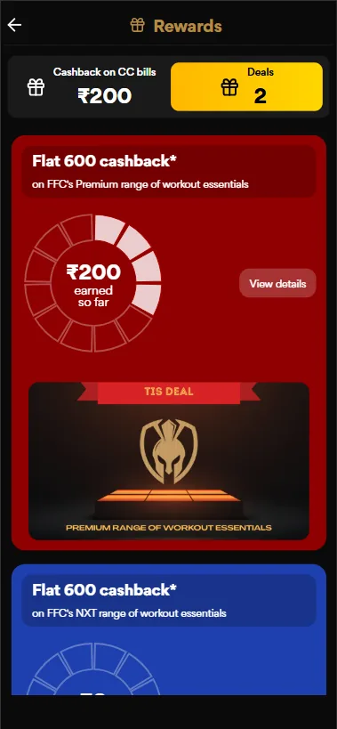
Rewards combines cashback summary, deals and voucher inventory. The detail promotion communicates an offer value, but offer terms, eligibility, expiry and redemption confirmation should be visible in the full flow.
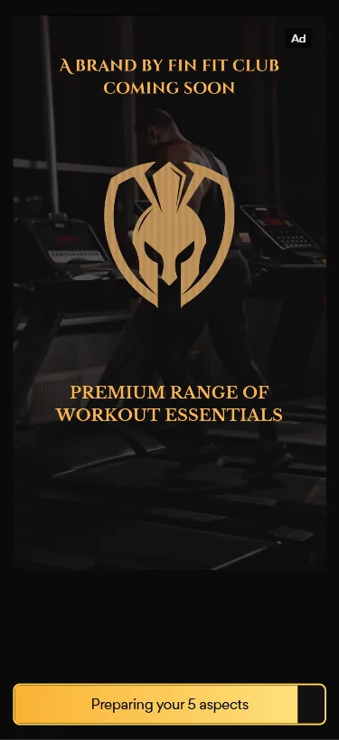
The promotional screen extends the club identity into a product/partner offer. It should be clearly distinguished from a core scorecard task and labelled as sponsored or promotional content where appropriate.
The archive contains a web dashboard and a separate marketing-site view. They should be presented as connected but distinct experience layers: one supports member engagement, the other explains the club proposition.
The web dashboard expands the experience with weekly goal progress, streaks, points, badges, challenges, spending insights, financial goals, learning and partner offers. Values visible in this mockup are sample interface data, not measured product performance.
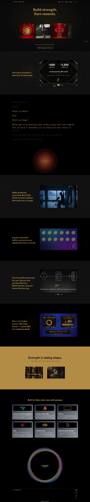
The marketing site uses the message “Build strength. Earn rewards.” and explains the club proposition through routine-based participation, premium positioning, privacy and reward benefits. The user journey from this site into signup should be validated as one acquisition path.
The supplied screens repeat a black-and-gold visual identity across member status, scorecards, rewards and promotional content. The design-system story should connect visual foundations with reusable behavior—not just describe the palette.
Observed visual direction: black surfaces, warm gold highlights, soft cream text and occasional campaign colors for reward cards. Hex values are illustrative estimates, not exported design tokens.
Display typography supports club identity; numeric emphasis makes score, cashback and reward value visible; compact labels support dense mobile cards.
Use consistent card padding, rounded containers, icon placement and spacing across dashboard modules, logs, rewards and promotional content.
| Component family | Variants / states to define | Behavior contract | Evidence in screens |
|---|---|---|---|
| Member score card | Default · updated · unavailable | Explain score definition, value, last update and entry to detail. | Home / dashboard detail |
| Progress ring / streak | Empty · in progress · completed | Show progress and define how streaks are counted. | Home / web dashboard |
| TIS aspect selector | Unselected · selected · disabled · max reached | Enforce five-choice rule and explain selection count. | TIS Default / Incognito |
| Rating control | Unrated · selected · saved · error | Expose scale meaning and progress through five aspects. | TIS rating |
| Privacy mode selector | Default · Incognito · selected | Explain data handling and consequences before logging. | TIS mode screens |
| History entry | Collapsed · expanded · empty | Show date, score and aspect-level detail with clear definitions. | History |
| Reward card / voucher | Available · collected · upcoming · expired | Show value, eligibility, expiry and next action. | Rewards |
| Content / campaign card | Editorial · sponsored · featured | Distinguish content from advertising and reward actions. | Pulse / promotions |
Design-system evidence boundary: The screens show repeated visual patterns and component families. They do not prove a production Figma library, tokens/variables, coded React component package, Storybook, component API or versioning process. Add actual Figma library captures or implementation evidence before claiming those deliverables.
A wellness and rewards experience depends on clear interpretation. Members should understand what is measured, what they choose to share, what they have earned and what happens when they redeem.
Define what an Invincible Score represents, how aspect ratings combine and how streaks or percentages are calculated.
Explain identity linkage, storage, retention, analytics and history behavior. “Absolute anonymity” should only be used if the technical model supports it.
Display offer conditions, expiry, redemption steps, status and what happens if a voucher cannot be used.
Use text labels with status colors, maintain contrast on black/gold surfaces, provide large tap targets and support screen readers and dynamic text.
These are design and QA requirements, not proof of formal WCAG conformance or privacy compliance testing. The implementation and actual data practices need independent verification.
The highest-risk experience areas are the scorecard's rules, the privacy choice, score interpretation and reward redemption. These should be tested before optimizing secondary content and visual details.
| Test task | What to observe | Success signal | Priority |
|---|---|---|---|
| Complete a TIS log | Can a member select five aspects, understand the scale and submit? | Completes the task without help and can explain the score. | Critical |
| Choose Incognito | Does the member understand what is private and what is stored? | Can accurately describe the mode before confirming. | Critical |
| Review History | Can a member interpret date, percentage and aspect-level values? | Correctly explains their previous log and progress. | High |
| Redeem a voucher | Can the member understand value, eligibility and redemption status? | Completes redemption and knows the resulting state. | Critical |
| Find a relevant Pulse item | Can a member distinguish editorial content, promotion and earn action? | Understands what happens after selecting Explore. | Medium |
| Use the web dashboard | Can a member understand goals, spending insights and challenge progress? | Finds the intended insight or next action. | High |
The supplied archive shows a member experience spanning routine logging, score history, content, rewards and a broader financial-wellness web dashboard.
DESIGN CONTRIBUTION
Connected the club proposition to a member journey across login, dashboard, scorecard, history and rewards.
Designed around the five-aspect Invincible Scorecard flow and the Default / Incognito choice visible in the mobile screens.
Presented score, cashback, streak and history as recurring member progress signals.
Structured Pulse, FinFit Shots, Express & Earn, deal cards and voucher states as distinct engagement destinations.
Extended the FinFit Club visual identity across mobile app, web dashboard and marketing website screens.
Rewards can create a reason to return, but trust is what makes the experience sustainable. Members need to understand what they are logging, how their progress is calculated, what privacy mode actually means and how a reward can be used. The strongest next iteration would validate those mechanics with real members before adding more engagement features.